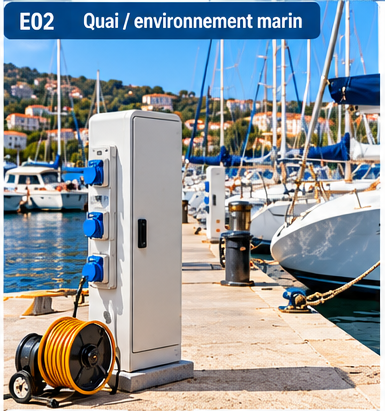
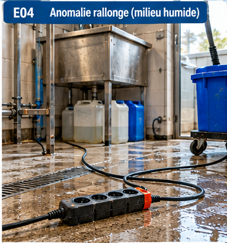
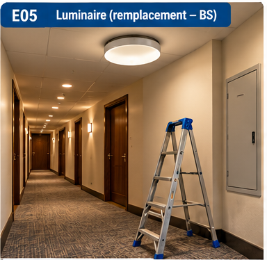
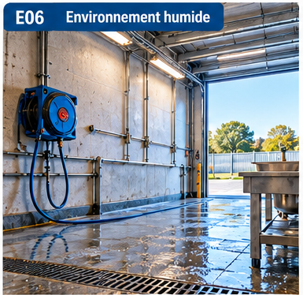

Cas par métier
Des situations génériques, pour s’entraîner à raisonner. Elles ne décrivent pas vos installations : celles-ci se précisent en séance avec le formateur.
Marins
Équipages et personnels embarqués ou à quai : l’électricité se mêle à l’eau, à l’humidité et au sel.
Une rallonge traîne au sol près de l’eau et une partie du câble est mouillée. Que faites-vous ? Qui a le droit de la débrancher ou de la remplacer ?
À bord, le disjoncteur d’un circuit déclenche à chaque tentative de réarmement. Le réarmer encore une fois est-il une bonne idée ? Qui diagnostique ?
Un appareil alimenté est tombé dans un fond de cale humide. Premier réflexe, avant de le toucher ?
Vous lavez un pont à proximité d’un coffret de prise. Quel risque, et quelle précaution de base (B0) ?
Restauration
Cuisines, plonge, chambres froides, salles : appareils de forte puissance, sols mouillés, nettoyage fréquent.
Le four ne chauffe plus. Vous soupçonnez un fusible ou une résistance. Que pouvez-vous faire, et que ne faites-vous pas sans titre adapté ?
Quatre appareils sont branchés sur une multiprise posée au sol près de la plonge. Quels risques ? Qui décide de la solution ?
Vous nettoyez un appareil encore branché, à grande eau. Pourquoi est-ce dangereux, et quel ordre suivre avant de nettoyer ?
Il déclenche seul. Avez-vous le droit de le réarmer ? Que faire si cela recommence ?
Port
Agents portuaires : bornes de quai, armoires extérieures, éclairage, manœuvres, chantiers à proximité des réseaux.
Un usager signale qu’une borne ne délivre plus de courant. Vous constatez que son disjoncteur est déclenché. Avez-vous le droit de le réarmer ? Selon quelles instructions ?
Vous trouvez la porte d’une armoire extérieure ouverte, traces d’humidité à l’intérieur. Que faites-vous, qui prévenez-vous ?
Un lampadaire est éteint. Remplacer la lampe est-il couvert par votre titre ? À quelle hauteur et dans quelles conditions ?
Une entreprise creuse près d’un câble repéré par un marquage. Quel est votre rôle ? Qui doit être alerté ?
Personnel polyvalent
Entretien, hôtellerie, espaces verts, vignoble, locaux techniques : des tâches variées, des locaux très différents.
Vous devez remplacer une lampe dans un luminaire de plafond. Quelles étapes avant de monter ? Faut-il couper le circuit ?
Vous repeignez un local technique avec une armoire électrique. Comment organiser le travail avec un symbole B0 ?
Le câble d’une perceuse est entaillé. Que faites-vous ? Qui la répare ou la remplace ?
Dans un local, une odeur de brûlé monte d’un coffret. Quelle conduite à tenir ?
Scènes à analyser
Six images génériques pour s’exercer au repérage. Pour chacune : que voyez-vous ? qu’est-ce qui peut devenir dangereux ? qui peut agir, et que fait-on si l’on n’est pas habilité ? Réflexe B0 / H0 / H0V : ne rien toucher, ne pas intervenir, signaler.
À repérer : Présence d’eau, nombreux appareils, nettoyage et projections, sols glissants.

À repérer : Humidité et sel, câbles au sol et passages piétons, capots abîmés.

À repérer : Accès à une zone électrique, interventions non autorisées, balisage.

À repérer : Eau à proximité, rallonge au sol, détériorations et trébuchement.

À repérer : Travail en hauteur, chute de plain-pied, éclairage insuffisant.

À repérer : Eau et projections, enrouleur, sols glissants.